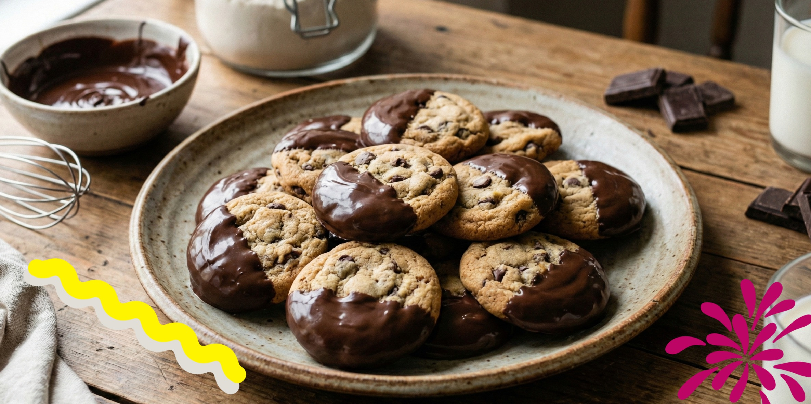

🏠 Home
Traditional Cookies

Who doesn't enjoy some delicious and soft cookies, straight out of the oven! This recipe delivers just that. It
requires about 30 minutes of preparation time and around 10 minutes of cooking
time! It can yields from 12 to 15 medium/large size cookies! 😋🍪
Ingredients
- ½ cup unsalted butter;
- 1 cup packed brown sugar;
- 3 tablespoons white sugar;
- 1 egg;
- 2 teaspoons vanilla extract;
- 1¾ cups all-purpose flour;
- ½ teaspoon baking soda;
- ½ teaspoon baking powder;
- ½ teaspoon salt;
- 1½ teaspoons instant espresso coffee powder;
- 1½ cups semisweet chocolate chips.
Step-by-step
- Gather the ingredients. Preheat the oven to 375 degrees F (190 degrees C). Grease a cookie sheet
- In a medium bowl, cream together the butter, brown sugar and white sugar until smooth. Beat in the egg and
vanilla. Sift together the flour, baking soda, baking powder, salt and espresso powder; stir into the creamed
mixture. Finally, stir in the chocolate chips.
- Drop dough by heaping tablespoonfuls onto the prepared baking sheet. Cookies should be 1½ to 2 inches apart. You
should have 12 to 15 large cookies.
- Bake for 8 to 10 minutes in the preheated oven. For crispier cookies, bake 2 minutes longer. Remove from baking
sheets to cool on wire racks.